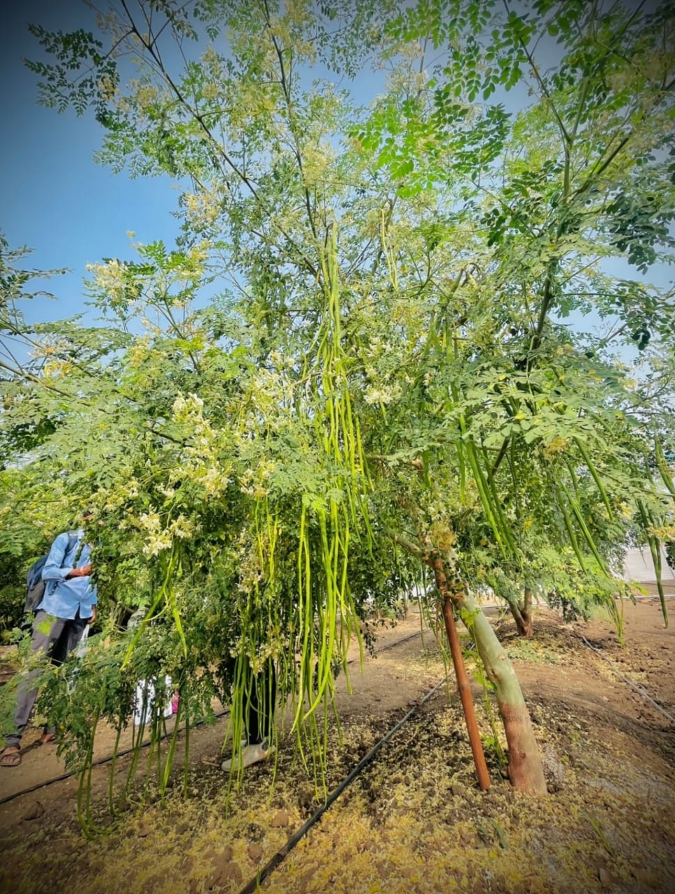

DrumstickDirect is a trusted supplier of export quality drumsticks in India. Our premium moringa pods are grown in Karnataka and supplied to wholesalers, supermarkets, hotels, restaurants and exporters looking for fresh and high-quality produce.
We focus on quality, freshness and consistency. Our farm-direct supply model helps us provide carefully selected drumsticks suitable for demanding buyers.
Located in Gauribidanur, Karnataka, we supply fresh drumsticks to buyers across India. Depending on season and availability, our supply capacity can reach up to 4 tons per day.
📞 WhatsApp: +91 83104 57215
🌐 Website:
www.drumstickdirect.in
👉 Drumstick Supplier Karnataka